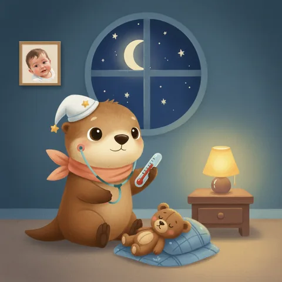

Ebeveynler için · Rehber
Gece ateş çıktı — ne zaman gelmeliyiz?

Gece yarısı sıcak bir alın, her ebeveynin kalbini hızlandırır. Önce derin bir nefes: ateş çoğu zaman hastalığın kendisi değil, vücudun enfeksiyonla mücadele ettiğinin işaretidir.
🦦 Boncuk'la 1 Dakika: bu rehberin 50 saniyelik sesli özeti — okumaya vakti olmayanlar için.
🇬🇧 English guide for international families: Child fever at night in Turkey →
Ateş nedir, nasıl ölçülür?
Koltuk altından ölçümde 38 °C ve üzeri ateş kabul edilir. En güvenilir yöntem dijital termometredir; el ile alna dokunmak yanıltıcı olabilir. Ölçtüğünüz değeri ve saati not edin — muayenede bu bilgi çok işe yarar.
Evde neler yapabilirsiniz?
- Çocuğunuzun üzerindeki fazla giysiyi ve kalın örtüyü azaltın; odayı serin ve havalandırılmış tutun.
- Bol sıvı verin — su, anne sütü, çorba. Ateşli çocuk kolay susuz kalır.
- Hekiminizin daha önce önerdiği bir ateş düşürücü varsa, önerilen dozda ve aralıkta kullanın. Kilo başına doz değiştiği için komşu/akraba tavsiyesiyle ilaç vermeyin.
- Soğuk duş, sirkeli su, alkolle ovma gibi yöntemler önerilmez.
- Çocuğunuz uyuyorsa ve genel durumu iyiyse, sırf ölçüm için uyandırmak gerekmez — dinlenme iyileşmenin parçasıdır.
Bunlar varsa beklemeyin
Aşağıdaki durumlardan herhangi biri varsa gece de olsa acil servise başvurun ya da 112'yi arayın:
- 3 aydan küçük bebekte 38 °C ve üzeri ateş — her zaman acildir.
- Havale (kasılma, gözlerde kayma, dalma) geçirmesi.
- Solunum güçlüğü: hızlı soluma, iniltili nefes, morarma.
- Uyandırmakta zorluk, aşırı uykuya meyil, emmeme/içmeme.
- Vücutta basmakla solmayan döküntü; ense sertliği; durdurulamayan kusma.
- İdrar miktarında belirgin azalma, ağlarken gözyaşı olmaması (susuzluk işaretleri).
- Ateşin 5 günden uzun sürmesi ya da düşürücüye rağmen genel durumun bozuk kalması.
Bunlar ise genelde bekleyebilir
Çocuğunuz ateşli ama su içiyor, sizinle göz teması kuruyor, arada oynuyor ve rahat uyuyorsa — geceyi evde yukarıdaki önlemlerle geçirip sabah hekiminize başvurmanız çoğu zaman yeterlidir. Emin olamadığınızda aramaktan çekinmeyin; "boş yere gelmişiz" diye bir muayene yoktur.